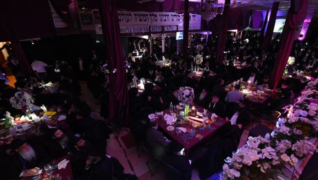

אהרון בוטבול
להביא משיח צדקינו אלפי שלוחי הרבי מלך המשיח מרחבי תבל הגיעו השבוע לכינוס השלוחים העולמי שנערך ב-770 וקיבלו החלטה משותפת שלא לנוח ולא לשקוט עד להתגלות בגאולה השלימה >> חמשה ימים רצופים של התעלות וחוויה רוחנית לצד הרצאות וסדנאות מקצועיות שמטרתן אחת: להתייעל ולהצליח בעבודה היחידה שנותרה להביא לקבלת פני
אלפי שלוחי הרבי מלך המשיח מרחבי תבל הגיעו השבוע לכינוס השלוחים העולמי שנערך ב-770 וקיבלו החלטה משותפת שלא לנוח ולא לשקוט עד להתגלות בגאולה השלימה >> חמשה ימים רצופים של התעלות וחוויה רוחנית לצד הרצאות וסדנאות מקצועיות שמטרתן אחת: להתייעל ולהצליח בעבודה היחידה שנותרה להביא לקבלת פני משיח בפועל ממש >> הסיפורים, האווירה המיוחדת, הדיונים והבאנקט המפואר במוצאי שבת בסקירה מרתקת על כינוס של צדיקים שהוא הנאה להם והנאה לעולם

הם דיברו על שחיטה. נושא בלתי רלוונטי בעליל לרוב רובם של היהודים בעולם, הנוהגים להיכנס לסופרמרקט הכשר הקרוב לביתם ולקנות את נתח העוף או הבקר המבוקש במצב מצונן או קפוא ובכשרות הרצויה. וגם אם הסופרמרקט אינו קרוב לבית, הרי שניתן למצוא את הבשר המבוקש במרחק משלוח בהזמנה טלפונית, או מקסימום בנסיעה סבירה.
אבל כשמדובר בשלוחים במדינת עולם שלישית, הכל הופך להיות מורכב. נכון שיש להם את הפריוליגיה לעבור לצמחונות ולהפוך את החיים להרבה פחות מורכבים, אבל הם בכלל לא הסיפור כאן. הם דואגים לקהילה היהודית המקומית, למאות ואולי אלפי היהודים המתגוררים במדינה והשאלה האם בבית יאכלו בשר כשר או ח”ו לא, תלויה רק במאמצים שלהם לארגן בשר טעים, טרי, איכותי במחיר הגיוני וכמובן כשר למהדרין.
סיפורי עולם שלישי
סביב השולחן התגלגלו סיפורי עולם שלישי. שליח שמצא את עצמו מוקף במאות מוסלמים זועמים עם סכינים בידיהם לאחר שטענו כי הוא מחלל את השחיטה המוסלמית, עד שנאלץ להניח ‘כופר’ לבעל המשחטה ולנוס על נפשו, שליח אחר שסיפר שהביא צוות שוחטים למדינתו אך נאלץ להשיבם לארץ ישראל כלעומת שבאו לאחר שהסוחר החליט לפתע למכור למישהו אחר את כל הבהמות שנקנו מראש ויועדו לשחיטה. שלישי סיפר על בית המטבחיים ההודי שבו יושבים אלפי הודים ושוחטים עשרות אלפי תרנגולות עם סכין שהם מחזיקים בין הרגלים ורביעי שסיפר על מפעל השחיטה המתוקתק שהקים.
אחר כך הם עברו לדבר על חינוך. פתאום אתה מגלה שגם השלוחים במדינות בהם פעולות ימיומיות בנאליות כרוכות בלוגיסטיקה מורכבת, מוטרדים ועסוקים בדילמות בהם כל הורה בקהילה חב”דית עסוק. איך מגדלים ילדים בשליחות? אז נכון שהרבי לוקח על הכתפיים שלו, אבל זה בתנאי שהילד רואה וגדל בבית שמעניק לו את היסודות לדרך הישרה.
מסתבר שגם זה לא פשוט. האחד מספר שהוא לומד עם הילדים שלו בעצמו מידי יום, משום שהשעות בכל בתי הספר הוירטואליים הקיימים אינן מתאימות לשעות בהן ילדיו ערים. השני מספר על הדילמה האם להכניס את ילדיו למוסדות הקהילה היהודית הקיימת משום שהרמה הדתית שם כמובן שאינה רצינית דיה.
עבור השלוחים בקצוות תבל, כינוס השלוחים הוא זמן איכות. הזדמנות מצויינת להחלפת חוויות ולהתייעצויות אחד עם השני. מסתבר שלמרות פלאי הטכנולוגיה והיכולת הטכנית לתקשר היום במהירות ואפילו בשיחה וירטואלית רבת משתתפים, אין תחליף לשיחת מסדרון, ארוחת בוקר או שולחן עגול.
לעיתים, דווקא אלו הם הרגעים שעושים את הכינוס. שיחת נפש כזו מלב אל לב, עידוד לשליח שחווה תקופה קשה שרק שליח אחר יכול להבין, או עצה טובה מניסיון אישי ששום יועץ או מומחה לא יוכל לתת.
הרישום
שעת פתיחת עמדות ההרשמה לכינוס נקבעה ליום רביעי בשעה 16:30, אך זמן מה קודם לכן כבר השתרכו תורים בקומה הראשונה של מלון אשל אברהם, שם נערך הכינוס.
בשעה הנקובה נפתחה ההרשמה באולם הגדול של קומת הכניסה. בצידי האולם הוגש כיבוד קל עבור השלוחים, שחלקם זה עתה הגיעו וחלקם שוהים ב–770 כבר כמה ימים.
מאחורי שולחנות ארוכים מקבלים את פני השלוחים נציגי המרכז לעניני חינוך העומד מאחורי ארגון הכנס. השלוחים נרשמים בהליך מהיר ומזורז, פרטיהם מוזנים למחשב והם נפנים לעמדה הבאה שם יקבלו את התג המכובד עליו יתנוסס שמם ומקום שליחותם, ותיק מהודר ובו תוכניית הכינוס, פרסומים שונים וכלי כתיבה.
תור השלוחים הארוך מתקדם במהירות וביעילות. וראשוני השלוחים כבר מסתובים ב–770 ענודים בתג הרשמי של הכינוס.
ואחריתך ישגה מאוד
מיד לאחר תפילת ערבית מוזמנים השלוחים לארוחת ערב חגיגית המציינת את פתיחת הכינוס. את פני השלוחים מקבל בר הגשה ארוך עמוס בכל טוב מעדנים כיד המלך. לאחר שהשלוחים מתיישבים במקומותיהם, פותח המנחה, הרב אהרון בוטבול מבית חב”ד קרית גת, את התכנית.
“והיה ראשיתך מצער ואחריתך ישגה מאוד”, מצטט המנחה את הפסוק הידוע ומציג את נושא הההתכנסות הערב. “בכל בית חב”ד ישנם קשיי בראשית בתחילת הדרך, אולם בברכת הרבי הקשיים מתמוססים ואחר כך פוצחת לה הצלחה כבירה”. במהלך הערב ישתפו הדוברים השלוחים מקשיי הבראשית שחוו בתחילת הדרך, ויספרו על ההתמודדות שלהם עם הקשיים בדרך להצלחה כיום.
ראשון הדוברים היה הרב יוסף יצחק גרשוביץ מחיפה. הרב גרשוביץ סיפר על ההתמודדות שלו בשכונת יוקרה חיפאית עם בעלי אינטרסים שונים שניסו להצר את צעדיו - כאשר המתחם בו נהג להקים את אוהל התפילה נרכש בידי איש עסקים שסירב בתוקף לאפשר לו פעילות במקום, וכיצד בסופו של דבר נחל הצלחה, ודווקא מתוך הקושי צמחה הצלחה גדולה. הדובר הבא היה הרב אליהו חביב מאדיס–אבבה באתיופיה. “ביקשו ממני לשתף בקשיי הבראשית”, פתח הרב חביב את דבריו בחיוך גדול ואופייני, “אבל מה לעשות שאין קשיים”, אמר. הוא שיתף את הקהל ברצף של השגחות פרטיות והשתלשלות הדברים שהביאו זוג צעיר לעזוב סביבה תומכת ולימודים גבוהים לבחינות הרבנות הראשית לישראל, ולטוס אל ארץ זרה ובלתי מוכרת כמו אתיופיה.
הדובר הבא, הרב מענדל טורין מספרינגפילד, אילינוי, סיפר איך החליט להגשים את חלומו לצאת לשליחות עוד כבחור טרם נישואיו, כאשר ניצל כל תקופה של חופשה מלימודיו בישיבה כדי לפעול בעיר הבירה של מדינת אילינוי שלא היה בה מעולם שליח. הוא סיפר איך פעל בשיטות של פעם, כאשר ניסה לאתר שמות של משפחות יהודיות בספר הטלפונים המקומי, וכך החל חריש עמוק ויסודי שנמשך שנים ומתחיל כיום לתת את אותותיו בקהילה יהודית שהולכת וקורמת עור וגידים.
הדובר האחרון הוא הרב יוסף יצחק קופצ’יק מלה–פז, בוליביה, ששיתף מספר סיפורים מרתקים ממקום שליחותו בבירת בוליביה.
770 מתמלא שלוחים
יום חמישי כ”ז מר–חשון, יומו השני והראשון המלא של כינוס השלוחים, נפתח בשיעור חסידות בשעת בוקר מוקדמת. השיעור נמסר בטוב טעם על ידי הרב יוסף טייב סביב שולחן ערוך בכיבוד קל על בימת ההתוועדויות ב–770.
השעון מתקדם ומורה כי השעה עשר הולכת וקרבה. שעת התפילה עם הרבי. 770 כבר מלא מפה אל פה בשלוחים מכל קצוות תבל לאחר שבמשך הלילה והבוקר הגיעו שלוחים רבים והצטרפו לכינוס. השעה חמשה לעשר, האות ניתן והשלוחים ביחד עם התמימים תלמידי הישיבה פוצחים בניגון ‘יחי’ המסורתי לפני התפילה. הלבבות פועמים בהתרגשות בתפילה, בציפיה ובתקווה כי נזכה לראות את הרבי מלך המשיח מלך ביופיו נכנס לתפילה, פוסע בשביל ומעודד בשתי ידיו בעוז את השלוחים הנושאים ‘שירה חדשה’, שירת הגאולה האמיתית והשלימה.
ארוחות מפוארות לשלוחי המלך
לאחר התפילה פונים השלוחים לאולם הגדול במלון אש”ל, שם ממתינה להם ארוחת בוקר מפוארת ערוכה בטוב טעם על גבי הבר. השלוחים מתיישבים לאכול סביב השולחנות העגולים, כאשר כל שולחן שכזה הופך למפגש משפחתי, כיתתי, חברי או סדנא כלשהי בזעיר אנפין - שכן, כידוע, אחת התועלות הגדולות והראשונות של הכינוס הוא דווקא במפגשי החברים השלוחים פנים אל פנים, בעצות הניתנות מלב אל לב, ומניסיון של שנים רבות.
ובעוד השלוחים סועדים את ליבם, עובר האחראי על הסדנאות הרב זלמן ברנשטיין בין השולחנות ומזרז את השלוחים לרדת לאולם הגדול בקומת הכניסה לתחילת מקבץ הסדנאות הראשון.
עבודה מתוכננת מצליחה יותר
התארגנות מהירה והסדנא הראשונה יוצאת לדרך. הנושא: סדר וארגון - כלים להצלחת השליחות.
“עבודה מתוכננת מצליחה יותר ומביאה לביסוס נכון ולהתפתחות המתאימה, בבית חב”ד פנימה ובפעולותיו כלפי חוץ. יחד נבין מהו תפקיד המנהל, נסיר את הערפל מעל צמד המילים ‘סדר וארגון’ ונלמד על האופן בו ניגשים לעבודה מסודרת שתביא אותנו להצליח יותר” - כך מבטיחה התוכניה, והאולם הגדול מתמלא עד מהרה בעשרות רבות של שלוחים שממתינים בציפיה לפתיחת הסדנא הכה רלוונטית עבורם.
הרב חיים ברוד מפלאיה דל כרמן במקסיקו משתף את השלוחים בפריצת הדרך המשמעותית שעשה בבית חב”ד מאז שעבר תהליך של סדר וארגון מחדש. “שום דבר משמעותי לא נבנה בלילה אחד”, אומר הרב ברוד, “אבל עם הרבה התמדה וסדר מסודר אפשר להגיע לתוצאות טובות הרבה יותר”.
את ההרצאה המרכזית של הסדנא מוסר שמואל הראל מגשר ויועץ לפיתוח ארגוני. הוא מלווה את דבריו במצגת ומציע פתרונות מעשיים כיצד למקד את העשיה והתכנון ולגרום לפעילות להתבצע בצורה מדוייקת יותר ומוצלחת יותר.
‘אופן המתקבל’
וקבלת פני משיח
הסדנא הבאה עוברת לאולם בקומה השניה. הנושא - העברת מסרים ‘באופן המתקבל’. שם כבר מחכים כבר שורה של שלוחים ורבנים, בעלי ניסיון רב בדיבור מול קהל במגוון סגנונות. מנחה הסדנא הוא הרב בצלאל וילשאנסקי, שליח בחיפה. הוא מספר מניסיונו על מקרים בהם העביר מסרים עמוקים בהצלחה גדולה בזכות הכנה מתאימה. הרב אברהם הרוניין, רב מרכז העיר כפר סבא, הוא הנואם הראשון. הוא מעשיר את הקהל בטיפים וטכניקות לריתוק קהל. כמו כן נואם הרב יוסף חיים רוזנבלט - רב אזורי, הגליל התחתון.
הדובר הבא הוא הרב דניאל שהינו, רב קהילת רשב”י בפורט לודרדייל בפלורידה, שמדהים את הקהל בסיפורים על הקהילה הספרדית אותה הוא מנהל ועל הצורה שבה הופכים מקורבים לחסידים.
תפילת מנחה עם הרבי. הקהל מתרבה עוד יותר, עקב השלוחים שמצטרפים כל העת.
חוזרים לסדנת הלכה עם הרב יוסף ישעי’ ברוין, המרא דאתרא דשכונת קראון הייטס, שמרתק את הקהל שעה ארוכה בדוגמאות שונות ממצבים מורכבים שמזדמנים לפתחם של השלוחים, ומלמד את כללי הפסיקה.
אחריו מדברים הרב מיכאל אבישיד מרבני מכון הלכה חב”ד, על ענייני אבלות, והרב יעקב חביב על מצבים בהם יש בעיה עם רבנים מזרמים שונים המפריעים לפעילות חב”ד במקום. “לא צריך להתווכח, מציע הרב יעקב חביב, “זה לא עוזר לכלום. לפעמים בפגישה פשוטה עם הרב או עם רבו שהוא יודע ספר באמת, ניתן לפתור הרבה ענינים”.
המושב המרכזי שחתם את יום חמישי נערך באולם האירועים של ליובאוויטשער ישיבה, תחת הכותרת “קבלת פני משיח צדקנו”, בהנחיית הרה”ח ר’ לוי ליברוב.
במהלך הערב נשאו דברים: השליח הרב יעקב ביטון מצרפת, הרב יוסף אבלסקי ממולדובה, הרב ברוך לבקיבקר מצפת, הרב חיים ניסלביץ מירושלים, ור’ מתי טוכפלד.
שיחות בארבע עינים
אבל מסתבר שמאחורי כל הסדנאות, העצות והטיפים, מה שבאמת מעניין את השלוחים הוא ביצוע המשימה - או יותר נכון השגת המטרה - שהציב הרבי בשיחה האחרונה שנאמרה בכינוס השלוחים, הלא היא השיחה המפורסמת של חיי שרה תשנ”ב, בה הסביר הרבי שנסתיימה עבודת השליחות ועתה העבודה היחידה שנותרה היא - קבלת פני משיח צדקנו בפועל ממש.
המסר הזה חוזר על עצמו ללא הרף, מתוך השורות וביניהן. החל משיחות אישיות בין השלוחים ועד גולת הכותרת של הכינוס - הבאנקעט המפואר במוצאי שבת.
בין לבין ניתן היה לצפות בחייליו הנאמנים של הרבי, מסיבים יחד לשיחות אישיות או להתוועדויות חסידיות. יחד כתף אל כתף, חברים מן העבר ומן ההווה, בני משפחה המפוזרים ברחבי תבל המנצלים את הימים המיוחדים הללו להתוועד יחד עד השעות הקטנות של הלילה מתוך אחוות רעים ודיבוק חברים, אם זה בליל שישי, או בראש חודש כסלו.
התוועדות הפתיחה בשבת
אך גולת הכותרת של ההתוועדויות, ושל הכינוס כולו, היא כמובן ההתוועדות המרכזית של הרבי בשבת בצהריים. ההתוועדות הפותחת באופן רשמי את כינוס השלוחים, כפי שנהוג במשך שנים, מאז נוסד הכינוס.
סביב שולחנות ארוכים לרוחב בית הכנסת הגדול יושבים השלוחים ומנגנים, חשים את רגעי ההתעלות ומצפים לשובו הגלוי הצפוי בכל רגע של האדון אל היכלו.
הבאנקעט
“21:00 - פתיחת דלתות, 21:30 - תחילת התוכנית”, כך היה כתוב בתוכניה של הכינוס. אולם עוד קודם השעה היעודה השתרך תור ארוך של שלוחים, שהמתינו בהתרגשות וציפיה בקור הניו יורקי להיכנס אל הבאנקעט.
בפנים נערכו ההכנות האחרונות והאולם הגדול של 770, כבר היה ערוך לקבלת המוני השלוחים שגדשו את המקום מפה לפה. בדיוק בשעה הנקובה נפתחו הדלתות והתור הארוך החל עושה את דרכו אל תוככי האולם. השלוחים מציגים בכניסה את התג הרשמי של הכינוס, אותו הם עונדים במהלך ימי הכינוס. התגים נסרקים על ידי מכשיר מיוחד, ופרטי השליח ניזונים בצורה אוטומטית לצורך ההגרלה הגדולה שתערך בהמשך בין השלוחים.
השלוחים ניגשים לנטילת ידיים ותופסים את מקומותיהם סביב השולחנות הערוכים. האולם הגדול, שעד לפני שעה קלה היה שרוי בעיצומן של התוועדויות השלוחים של השבת, שינה מראהו לבלי הכר. בדים ארוכים כיסו את כתליו ועמודיו. שטיח אדום נפרש לרגלי הנכנסים ולצידו אגרטלי פרחים מרהיבים. בימת ההתוועדויות של הרבי הפכה לערב אחד לבימת הכבוד המהודרת. פודיום שקוף המתין למנחה, וברקע תזמורתו של ר’ יוסי כהן מנגנת מוזיקת רקע נעימה בליווי כינורו של אמן הכינור ר’ מרדכי ברוצקי.
שולחנות ערוכים ברוב פאר והדר מילאו את האולם הגדול מקצה אל קצה. על המסכים מופיע שעון עצר המראה את הזמן שנותר עד לתחילת התוכנית ודוכן חלוקה שהוצב בכניסה הציע לשלוחים מכשירים לתרגום סימולטני של כל מהלך הבאנקעט.
בדיוק בשעה 21:30 כפי שהובטח בתכניה, עולה לבמה המנחה הרב יוסף צבי קרליבך, שליח הרבי באוניברסיטת רוג’סטר בניו ג’רזי.
“אחיי השלוחים”, פותח הרב קרליבך את הבאנקעט של כינוס השלוחים השלושים במספר, “פותחים בדבר מלכות”. לאחר מילות פתיחה קצרות מזמין הרב קרליבך את השלוחים לצפות בסרט קצר משיחה מיוחדת של הרבי לשלוחים.
על המסכים נראית דמותו של הרבי מלך המשיח. הרבי מדבר על השלוחים בחום ובלבביות ומעודד אותם במילים מופלאות. לקראת סיום מברך הרבי את שהגיעו מהמדינות הרחוקות וגם את אלו ש’מתגוללים ברפש’, כלשונו של הרבי, ‘במקומות הקרובים’.
לאחר השיחה נראה הרבי מעודד את שירת ה’יחי’ בחזקה דקות ארוכות. רגעים אלו שנחרטו לנצח בלבבות כולנו נותנים לשלוחים תחושה של ביטחון וחיזוק בדברי הרבי כי דבר מדבריו לא ישוב ריקם.
את הפרק של הרבי כובד לקרוא הרב שניאור זלמן אליהו הכהן הנדל, אביה של השליחה חני סגל מראשון לציון שנפטרה בדמי ימיה.
ויאמינו בה’ ובמשה עבדו
הדובר הראשון שפתח את מסכת הנואמים בבאנקעט היה הרב מנחם מענדל וילשאנסקי, ראש ישיבת חב”ד ושליח הרבי בחיפה. הרב וילשאנסקי נשא נאום מרגש ועורר את הנקודה של “ויאמינו בה’ ובמשה עבדו”, הנאמנות לנשיא הדור ומשיח שבדור, תוך שהוא משתף את הקהל בסיפורים אישיים ומרגשים.
הדובר הבא היה המרא דאתרא וזקן חברי הבד”צ בשכונת קראון הייטס הגאון החסיד הרב אהרן יעקב שווי. הרב שווי בירך את השלוחים כנציג שכונת המלך המארחת את הכינוס מידי שנה בשנה.
לאחר דבריו של הרב שווי הציג המנחה את מי שעומד מאחורי התקציב לכינוס, הפילנתרופ החסידי ר’ שלום דובער דריזין. המנחה בירך את ר’ שלום בער בשם כל השלוחים בברכת הצלחה בגשמיות וברוחניות לאורך ימים ושנים טובות.
את ברכת ארץ ישראל הביא מר דני דיין, הקונסול הכללי של ארץ ישראל בניו יורק ולשעבר ראש מועצת יש”ע. הוא סיפר את החוויות האישיות שלו מתפילת מנחה שהתפלל ב–770 לפני כמעט ארבעים שנה, ודיבר בהתלהבות רבה על כך שארץ ישראל שייכת לעם היהודי, ועל תפקידם של השלוחים כמגינים על ארץ ישראל.
המרא דאתרא וחבר הבד”ץ, הרב יוסף ישעי’ ברוין, מוזמן לשאת דברים. הוא מזכיר לקהל את פתיחת הכינוס בשנת תשנ”ב, כשהרבי הגדיר את השליחות העיקרית בהכנת העולם לקבל פני המשיח.
הרב ברוין מזכיר את עובדת היותנו ארבעים שנה לר”ח כסלו. “דקות לפני השבת, קיבלתי אימייל ממישהו, שסיפר לי שמדענים ביצעו ניסוי שיחבר ראש עם גוף”, מספר הרב ברוין, וממשיך: “בלקוטי תורה פרשת במדבר, וכן במאמר אני לדודי, מובאת לשון מעניינת ש”אם היה נמצא ברפואות לחבר גופו אל ראשו”. הרבי מדייק בלשון “אם היה נמצא”, שמזה משמע לכאורה שתתכן מציאות כזאת, אלא שאינה מצויה.
“בהמשך לכך, מביא הרבי מכמה מקורות שאכן בתקופת הגמרא היה סם כזה שהיה יכול לחבר את הגוף אל הראש, אלא שאינו מצוי כלל. ומסיים הרבי “וגם בזה נראה גודל דיוק לשון רבותינו נשיאינו”.
זה היום אשר פדה בשלום נפשנו, ואור וחיות נפשנו ניתן לנו - קיבלנו את הרבי בחזרה, באור וחיות, באופן של גילוי. שהרי מצד הרבי לעולם אין נתק בינו, בין הראש, לבין הגוף. אבל עלינו לשאול את עצמנו, האם אנחנו מחוברים לראש? האם הרבי בקרבנו, אם אין?
הרבי השפיע על חיי
אחד הנאומים המרתקים של הכנס היה נאומו של סגן יו”ר הפרלמנט של מועצת אירופה מר גריק לוגובינסקי. הוא שיתף את הקהל בסיפור חייו המרתק והמפעים ועל השפעתו של הרבי על חייו, השפעה שניכרת בו עד היום.
“הייתי לא מזמן בפגישה עם ראש הממשלה בנימין נתניהו”, חושף מר לוגובינסקי, “אמרתי לו שיש לנו מן המשותף, ששנינו זכינו בברכת הרבי מליובאוויטש שהשפיעה על חיינו”.
הנואם האחרון של הבאנקעט היה הרב ראובן וולף שליח הרבי בלוס אנג’לס, קליפורניה שנשא נאום מעורר השראה, נוגע ללב ומעודד במיוחד. הרב וולף סיפר את סיפורו האישי המדהים, על הדרך שבה הגיע לליובאוויטש בשנת תשמ”ט, וכיצד ‘גילה’ את השיחות על משיח. במשך שעה ארוכה מאוד מלהיב הרב וולף את הקהל בנאום נרגש, יוצא מן הלב ובנוי היטב לתלפיות (הנאום המלא - בכתבה נפרדת).
בסיום הערב, נערכה הגרלה במסגרתה זכו כמאה שלוחים במענק כספי של 500$ השתתפות בהוצאות הנסיעה והפעילות.
שליח הרבי בקישינב, מולדובה, הרב יוסף אבלסקי מוזמן לברך ברכת המזון.
עם סיומו של הבאנקעט הרשמי, הפך האולם הגדול מידית לאולם לעשרות התוועדויות ספונטיניות, שנמשכו עד השעות הקטנות של הלילה.
יום של סדנאות
יום ראשון כולו היה מוקדש לסדנאות. אחת התופעות המבורכות המתקיימות בכינוס השלוחים היא העבודה המשותפת וייעוץ של איש לאחיו.
במהלך היום התקיימו דיונים סביב שולחנות עגולים במגוון תחומים: השליח הרב אריה גרינברג ניהל סדנא לבניית בנין לבית חב”ד, השליח הרב זלמן בליניצקי על ביקורי בית, הרב אברהם מאירי על בתי חב”ד למטייל, ועוד.
במהלך היום התקיים פאנל מרתק בנושא “חיי המשפחה, המפתח להצלחה בשליחות”. הנואם הראשי הרב ד”ר חנוך מידובניק, שהציג בפני השלוחים פתרונות לדילמות המתעוררות בחיי המשפחה תוך כדי העיסוק האינטנסיבי בפעילות בית חב”ד.
לאחריו נשא דברים הרב שמואל פסח בוגומילסקי על התנהלות מוסדות בהוראות הרבי.
ועידת הנעילה
מושב הנעילה של כינוס השלוחים העולמי, עמד בסימן “ויהי בארבעים שנה”. נשאו דברים הרב דוד נחשון יו”ר ניידות חב”ד באה”ק, השליח הרב יצחק גולדשטיין ממדריד, הרב מנחם מענדל הכהן הענדל יו”ר מרכז חב”ד העולמי, ועוד.
השלוחים חתמו את הכינוס בהתוועדות לרגל יום הבהיר בהתחזקות בשליחות היחידה “קבלת פני משיח”.
ניסים, ניסים…
הנקודה של הניסים חוזרת על עצמה בווריאציות שונות. ניתן לומר שזוהי אולי המילה הכי נאמרת בכינוס, אפילו יותר מ’חובות’. הסיפורים על ניסים, השגחות פרטיות, התרחשויות שאירעו שלא כדרך הטבע או עלילות שקיבלו לפתע טוויסט מעודד ובלתי צפוי, מתגלגלים מעל ומתחת לשולחנות בשפע. הנה אחד מהם, שסופר באחת הסדנאות על ידי הרב דניאל שהינו, רב ומנהיג קהילה ספרדית גדולה ברוח חב”דית במיאמי.
עקב בעיות בטיחות שונות במבנה בית הכנסת, נדרשה הקהילה לפנות את בית הכנסת עד לתאריך מסויים. אולם כיון שלא נמצא פתרון חלופי, הם נאלצו להתעלם מצו הפינוי ונותרו במבנה.
לאחר חצי שנה של התעלמות מדו”חות ואזהרות, החליטה העיריה לתבוע את בית הכנסת ואל בית המשפט הגיע הרב שהינו כאחראי על בית הכנסת.
התביעה התנהלה בבית משפט לעניינים מנהליים. זהו אולם גדול שבו יושבים הנאשמים והם נקראים בזה אחר זה אל הדוכן. השופט מרפרף בחומר התביעה, ואז פוסק במהירות סכום כשלהו כקנס לפי ראות עיניו, ובכך חותם את הדיון ופונה לתיק הבא בתור.
באותו בוקר בו הופיע הרב שהינו, עלה לדוכן הנאשמים בחור ישראלי שהתחכם עם השופט, זלזל בו ואף דיבר בחוצפה. השופט רתח מזעם, והטיל על הנאשם קנס כספי גבוה במיוחד.
מאותו הרגע, מספר הרב שהינו, השופט הפך להיות עצבני וחסר סבלנות. הוא לא הקשיב לטענות והחל לפסוק לחומרה ולהטיל את הקנס המירבי הקבוע בחוק.
באולם שררה דממת מתח. הנאשמים הבינו לאן נושבת הרוח והתפללו בליבם שיחוס וירחם. גם הרב שהינו היה במתח, והעובדה שהגורם להוצאת השופט מדעתו היה יהודי וישראלי, לא הוסיפה לו סיבות לאופטימיות.
באותם רגעים נזכר הרב שהינו בהוראה של הרבי ללמוד תניא בעיון כסגולה לישועות. ‘זה הזמן’, חשב הרב שהינו ופתח ספר תניא קטן שהיה בידו וניסה להתעמק בו.
הוא ניסה להתרכז במילים, במשפטים, להתבונן בהם לעומק ולנסות למצוא עומקים חדשים בדברי התניא, כדי שהלימוד יחשב ‘תניא בעיון’ ברמה הגבוהה ביותר.
לפתע שמע קול אישה פונה אליו. מה אתה קורא? התעניינה. הרב שהינו הביט בשואלת שלידו שנראתה כגויה גמורה, ותהה כיצד יסביר לגויה מהו ספר התניא, ובכלל הוא אמור ללמוד בו כעת בעיון ולא להעביר הרצאה בנושא ‘ספר התניא וכוחו האלוקי’ למתעניינת אלמונית שאינה יהודיה.
הרב שהינו ניסה לפטור אותה במלמול רפה כלשהו על ספר יהודי, אולם הגברת לא הירפתה והתעקשה לדעת מה הספר הזה?
“לספר קוראים תניא”, אמר הרב שהינו והתכונן להמשיך להתעמק בספר שלפניו. אך האישה פערה זוג עינים נדהמות וסרבה להאמין. “זה לא אמיתי, אתה צוחק עלי, נכון”? שאלה בתדהמה. הרב שהינו לא הצליח להבין מה כל כך מפליא בשמו של ספר התניא, אז זו המשיכה ושאלה “ואיך אתה יודע את שמי ‘טניה’?”
הרב שהינו הבהיר לגברת כי הוא אינו מכיר כלל את שמה, וכי כך קוראים באמת לספר. לאות הוכחה הוא הראה לה את הכיתוב באנגלית בדפים הראשונים של הספר, במקום שבו מופיעה האזהרה על זכויות היוצרים וההוצאה לאור.
“אם יש ספר הנושא את שמי, אני חייבת לדעת מה כתוב בו”, אמרה האישה וביקשה לדעת עוד פרטים. כל השיחה עם הגברת הלא מוכרת הייתה לרב שהינו לזרא, שהרי הוא ביקש ללמוד תניא בעיון לעצמו, מה גם שמפני כבוד בית המשפט השיחה התנהלה בהתלחששויות.
הרב שהינו הסביר לה בקצרה על תוכנו של ספר התניא ועל הנושאים הכלולים בו, אבל האישה המשיכה לשאול ולהתעניין, ולבסוף שאלה היכן היא תוכל להעמיק בספר היהודי המרתק הזה הנושא את שמה.
השיחה בין השניים טרם הסתיימה, כשלפתע נשמע קולו של השופט מרעים בקול וקורא לנאשם הבא, ‘רשב”י סינגוג’, להתייצב על ספסל הנאשמים.
באותו רגע קורה הדבר המפתיע הבא: יחד עם הרב שהינו קמה גם האישה. שניהם פוסעים לעבר קדמת האולם, הרב שהינו מתיישב על ספסל הנאשמים, והגברת מתיישבת על מקום התובע. מסתבר שאותה טניה הייתה לא אחרת מאשר התובעת מטעם העיריה בתיק של בית הכנסת.
השופט, שטרם נרגע, פונה אל הרב שהינו ומקריא בקול עצבני את סעיפי האישום, ואז פונה אל התובעת ושואל - האם יש לתובעת מה להוסיף?
אולם אז מתרחש דבר מוזר בבית המשפט. התובעת נאלמת דום. השופט חוזר על שאלתו בשנית, אולם כל תגובה לא נשמעת מכיון התביעה.
השופט שהיה קצר רוח מתחיל לגלות סימני עצבנות, “האם התובעת מכחישה או מאשרת”? הוא שואל בהרמת קול.
אך התובעת ממשיכה לבהות בשופט במבט חלול, ולא מוציאה הגה מהפה. פניו של השופט שוב מאדימים, ורידי מצחו מתנפחים, הוא נוטל בכעס את הפטיש, דופק על השולחן לאות החלטה ומכריז “אם כך, התביעה נדחית, התיק נסגר!” ופונה לתיק הבא.